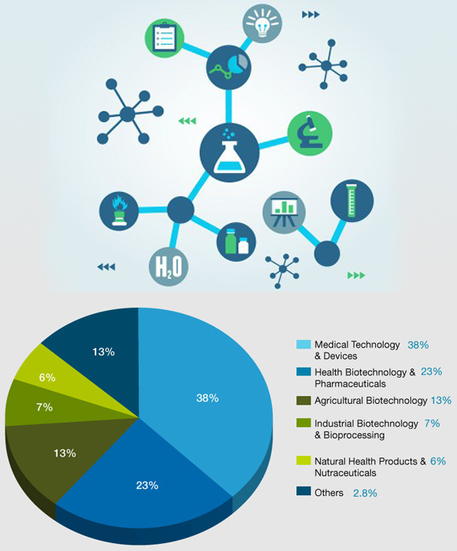

Banking and Financial Services
Various segments that we serve in BFS.Banking and Capital Markets.
Banks and securities firms are faced with numerous challenges and sweeping changes. Our Global Banking and Capital Markets professionals are dedicated to serving you. We connect teams around the globe that share information on current and emerging trends to help you address issues in assurance, risk, tax, transactions and finance. This connectivity and knowledge-sharing gives us the ability to:
- Provide approaches that are tailored to the needs of our banking clients.
- Offer timely insights on pressing industry issues.
- Develop a strong bench of professionals to deliver effective staffing and partner rotation.
- Fulfil our commitment to consistent, high-quality service.
We assemble the right multi-disciplinary team for your business, drawing on our global network of professionals. Working with you in a collaborative style, we gain a clear understanding of your organization and strive to identify issues before they become problems. You get the people you need, wherever in the world you need them, backed up by leading practices, methodologies and tools.
Wealth and Asset Management
The industry has emerged from the financial crisis to face a changing and complex regulatory and tax environment and a rapidly changing client base that’s older and more risk-averse, yet more sophisticated and demanding.Firms are now keenly focused on managing regulatory change, risk and volatility and rapidly positioning themselves to compete for market share. Many firms have been forced to consider redesigning their business operating models as part of a renewed strategic focus on aggressive cost control and operational efficiency.
More importantly : Growth has returned to the industry. Lines are blurring, both in the regulated and alternative spaces, as managers look to diversify revenue streams and find new opportunities. Firms must fully understand how the distribution game has changed, both globally and locally, and how to most effectively increase revenue and improve margins.
How we work
Our combination of talent and resources gives us the ability to anticipate and adapt to the rapid and accelerating changes of today’s global economy.
Insurance
Insurance industry is primarily facing certain challenges viz.., regulatory changes, rise of emerging markets, ongoing economic uncertainty, technology driven turbulence, increasing customer expectations. These challenges also offer the key to future profitability for insurers who make the right strategic, investment, organizational and operational changes.Our experts help you to successfully meet these challenges. We can help you ask the right questions, set priorities and define the action plans needed to succeed in the fast-shifting insurance landscape.
Major insurance companies around the world expect to be served by professionals who combine technical knowledge with a thorough understanding of the market dynamics, industry drivers and operational considerations that impact organizations of their size and scale.
How we work
Our network of professionals are dedicated to serve you sharing information and experience on current and emerging industry issue. Our goal is to help clients address their complex issues by drawing on our broad range of services.
Life Sciences
Amplified business decisions are the new norm thanks to rapid changes. From new market entrants and regulatory reform to expiring patents and the growing challenge of chronic diseases, leaders in the life sciences community must explore a new course to address the changing climate for health care-one driven by patients and focused on health outcomes.Biotechnology and Pharmaceuticals
More than any other technology, biotechnology has the potential to alter our lives in a positive way. And by achieving this potential, today’s biotech companies are delivering new levels of health, prosperity and sustainability-across the world.But with uncertain capital markets, increasing regulation, growing pricing pressures, competition for acquisitions and an evolving health care environment around the world, this sector faces unprecedented challenges.
We have been a pioneering presence in the biotechnology industry. We were the first professional services firm to build a practice dedicated to serving your industry.
We’ve stayed committed to your business with our leading reports and our network of knowledgeable professionals.
So it’s not surprising that we serve more biotech companies than any other professional services firm-by a wide margin.
Pharmaceutical companies are facing great changes to the industry-emerging science, new products and services, shifting demographics, evolving regulations, transforming business models and increased stakeholder expectations. We are helping pharmaceutical companies around the globe to address the challenges presented by this new world.
Our thought leadership helps you navigate the shifting global landscape and grow your business-the new business imperative of improving health outcomes.

Today we stand on the tip of the next big wave in improvements in health outcomes-driven not just by new products, but by behavioural change. We are moving to a world in which more emphasis will be on gathering evidence to identify interventions that are most effective at improving health outcomes, and then realigning the behaviour of all stakeholders-patients, providers, manufacturers and others-around these interventions.
How we work
we help drive your business performance. Whether it’s forming the right alliances, testing new business models, improving operations or gaining insights into the market, we can help you create value in the new evidence-based, outcomes-focused, behaviour-driven environment for health care. Our team works to anticipate market trends and their implications, so you get practical advice on the right way forward for your organization.
We also publish a series of reports to bring you clear insights on accounting, tax, transaction, compliance and business process issues.
Media & Entertainment
In an industry synonymous with creativity and innovation, the bar for business excellence is set high. You need to embrace new technology, develop new distribution models and satisfy the demands of a voracious and outspoken consumer. At the same time it’s important to manage costs, exceed stakeholder expectations and comply with new regulations. There’s always another challenge just around the corner. Our network of professionals collaborate and share knowledge around the world, to provide consistent, high-quality service and leverage our leading market share position to provide you with actionable information, quickly and reliably.
Business Models
The rapidly changing digital marketplace is placing new demands on systems and processes. Many M&E companies are taking a top-to-bottom look at the infrastructure that supports both new and old business models. Many are finding that their organizations, processes and tools are not up to the task of supporting the new digital business models.
We help our clients
Develop processes and organizational infrastructure with the necessary flexibility to keep pace with the speed of digital innovation.
Re-evaluate and improve systems, processes and policies across both traditional and digital platforms. Build IP management systems that encompass the entire life cycle associated with managing contracts, rights use and royalties.
Deploy a rights management system that tracks which content can be used when, where and in what formats. Automate rights systems to increase speed to market and decrease risk of contract violations Focus on digital supply management to ensure that media assets can be easily found and distributed across media platforms. Increase data capture to support new business models and drive decision-making.
The rapidly changing digital marketplace is placing new demands on systems and processes. Many M&E companies are taking a top-to-bottom look at the infrastructure that supports both new and old business models. Many are finding that their organizations, processes and tools are not up to the task of supporting the new digital business models.
We help our clients
Develop processes and organizational infrastructure with the necessary flexibility to keep pace with the speed of digital innovation.
Re-evaluate and improve systems, processes and policies across both traditional and digital platforms. Build IP management systems that encompass the entire life cycle associated with managing contracts, rights use and royalties.
Deploy a rights management system that tracks which content can be used when, where and in what formats. Automate rights systems to increase speed to market and decrease risk of contract violations Focus on digital supply management to ensure that media assets can be easily found and distributed across media platforms. Increase data capture to support new business models and drive decision-making.
How we work
We work to anticipate market trends, identify the implications and develop points of view on relevant industry issues. Ultimately, we assist you in meeting your goals and competing more effectively. For media and entertainment companies, integration and adaptability are becoming critical success factors. We help you in delivering and making difference.
Public
Our policy-makers are operating in a rapidly-changing world. Shifting demographics, urbanization and climate change are just a few of the long-term and systemic trends reshaping 21st century government.And with finances tight, growth stalling and unemployment high, the legacy of the financial crisis continues to play out across borders. We aim to drive transformational change for governments around the world. In countries large and small, developed and emerging, we understand the issues and can provide you solutions that will have lasting impact.
How we work
We bring international experience and insight to all our clients – with local knowledge and understanding. Our team of experts create solutions that are tailored to the needs of public clients. We know what has worked elsewhere, and can tailor these solutions to your challenges.
Travel
Advanced technology is creating vast opportunities in travel, tourism and transportation sector. Customers are quickly picking up these generating demands. To meet customer expectation, meet demand and have better operational excellence, this sector needs more resilient business and technology advisory.Clients must review their business models, be flexible in adopting industry trends and fully harness social, mobile media. Our deep expertise enables our clients in developing programs for a new future. We use innovative approaches to tailor offers precisely to customer requirements and to align process flows and organization structures with new strategies. We also support regional projects aimed at developing tourism. Our work spans the globe and touches on topics such as planning and investing in infrastructure, product design, and branding.Retail
To make a sale and keep loyal customers, retailers need more than a good deal on their catalogue. A winning position requires superior strategy, attractive merchandising, efficient operations, targeted marketing, a robust organization, and reliable technology. In a world that’s more complex, connected and fast-moving than ever, the opportunities are massive, but so are the risks. With uncompromising stakeholders demanding consistent growth and consumers demanding value and taking ownership of your brands, it’s time to reframe strategic choices, realign the value chain and relentlessly execute for short-term results and long term sustainability.Strategy
Retail has long been a game of testing and learning. But as the industry matures, disciplined mid- and long-term strategic planning and focused execution are becoming indispensable for sustainable performance
We work with our clients to chalk-out the best strategy to enhance the value creation. The strategy would enable our client to identify pockets of future growth in new categories, new target groups, or new regional markets. This requires our clients adapting to new business models, value propositions, and format strategies to the dynamics of markets.
Operations
Retailers need operational excellence to protect their profits, meet customer promises. Retailers must focus on improving efficiency, reducing waste in all store processes. As part of operational excellence, improve in frontline operations enhance customer service and satisfaction, drive transactions and basket sizes, attract and retain highly engaged employees, improve leadership at shopfloor and field managers.
We help our clients in improving these that would benefit in their long-run for success.
Technology
Technology is dictating the success of retailers, how to run business. Early adopters of advanced technology achieve sizable benefits. We continuously work with retailers to explore, identify and implement effective, robust solutions to maximize profits. We scout the market for new trends and innovations in retail technology, and we provide criteria to help retailers prioritize their investments.
Retailers need operational excellence to protect their profits, meet customer promises. Retailers must focus on improving efficiency, reducing waste in all store processes. As part of operational excellence, improve in frontline operations enhance customer service and satisfaction, drive transactions and basket sizes, attract and retain highly engaged employees, improve leadership at shopfloor and field managers.
We help our clients in improving these that would benefit in their long-run for success.
Technology
Technology is dictating the success of retailers, how to run business. Early adopters of advanced technology achieve sizable benefits. We continuously work with retailers to explore, identify and implement effective, robust solutions to maximize profits. We scout the market for new trends and innovations in retail technology, and we provide criteria to help retailers prioritize their investments.
Telecommunications
Telecommunications operators are mastering the demands of technological and regulatory changes while illustrating transparency, customer innovation and bringing new services to the market.The telecom industry is transforming before our very eyes. And in many instances, there are no hard set rules for the new digital platforms, tools and lifecycle in which they live.
In this industry more than any other, therefore, embracing a strategic, forward-looking business model is critical to survival and success. The transformation that has gripped the landscape presents you with challenges, risks and opportunities as never before.
With continued pressure from new players entering the market, operators must continually find ways to stay ahead of the game. Strategies include investment in next-generation technologies and alternative network sourcing arrangement.
Telecommunications operators are facing a rapidly transforming business model. Competition from technology companies is creating fierce challenges over the ownership of customers and service innovation, and pricing pressures and network capacity are intensifying scrutiny on return on investment.
Additionally, regulatory pressures and shareholder expectations require agility and cost efficiency. If you are facing these challenges, we can provide an industry-based perspective to addressing your assurance, advisory, transaction and tax need.
How we work
Our global telecommunications center is a virtual hub that brings together people, cultures and leading ideas from across the world, to help you address your global, regional and local challenges. These may include next-generation services and product profitability, customer lifecycles and revenue assurance, working capital management, risk, regulatory strategies and compliance, potential cost reductions, mergers and acquisitions, financial and operational improvements, accounting and tax strategies.
How we work
Our global telecommunications center is a virtual hub that brings together people, cultures and leading ideas from across the world, to help you address your global, regional and local challenges. These may include next-generation services and product profitability, customer lifecycles and revenue assurance, working capital management, risk, regulatory strategies and compliance, potential cost reductions, mergers and acquisitions, financial and operational improvements, accounting and tax strategies.
Legal practice
Legal Practice Management has grown over the years and has now become extremely specialised and complex. Seamless Technology Automation has become a very important aspect in managing a profitable law practice and requires a synchronous information flow between each of its members, departments and branch offices that can be across continents. Back office for Finance & Accounting require powerful and fully automised tools to manage on-time client billings and cash flow. Management needs reporting and key performance indicators to define growth strategies and further maximize profits.
Challenges for Professional Legal Firms Today
- Increasing Productivity and Tracking Profitability across Inter Firm Groups/Client Group and Firm Branch Offices.
- Integrated Timesheet/ Billing with full Cash Accounting Finance.
- On time Client Billing and Matter Tracking.
- Knowledge Management and Sharing.
- Integrated HRMS and Payroll.
- Managing Patents/Trademarks/Designs.
- Litigation Management including Case Calendaring/Diary, Tasks with complete Billing.